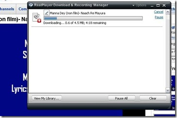

How to convert .flv Video file in to .mp3
आप कई बार यू ट्यूब या अन्य जाल स्थलों से गाने डाउनलोड करते हैं तो वे .flv एक्सटेंशन में सेव होते हैं जो ज्यादातर प्लेयर में (मसलन विनेम्प, रीयल प्लेयर और विन्डो मीडीया प्लेयर) में नहीं बजते, उनके लिये अलग से .flv प्लेयर डाउनलोड/इंस्टाल करना पड़ता है। आज मैं आपको ऐसा तरीका बता रहा हूं जिससे आप .flv गानों को आसानी से Mp3 में बदल सकेंगे।
पहला तरीका तो है ज़मजार (www.zamzar.com) यह एक आसान तरीका है पर पता नहीं कभी कभी यह जितना टेक्स्ट-पीडीएफ फाईलों में बढ़िया काम करता है उतना ओडियो-वीडियो फाइलों में नहीं! वैसे इसे भी ट्राई करने में हर्ज नहीं है।
पहले यू ट्यूब से वीडियो डाउनलोड करना सीखते हैं। 
कई मित्रों को यूट्यूब से डाउनलोड का आसान तरीका पता नहीं होता, उनके लिये सबसे आसान तरीका है कि आप रीयल प्लेयर Player11 इन्स्टाल कर लें। अब जब भी आप यूट्यूब पर कोई वीडियो चल रहा हो और आप उस पर माउस का पोइन्टर ले जायेंगे तो आपको लिखा हुआ दिखने लगेगा, डाउनलोड दिस वीडियो Download this video बस इस पर क्लिक कर दें। चैक कर लीजिये My Documents- My Videos-RealPlayer Downloads में आपका वीडियो डाउनलोड हो चुका है।
अब आते हैं दूसरे तरीके पर पर, अब इस .flv गाने को .Mp3 में बदलते हैं।
सबसे पहले आप http://www.flv2mp3.com खोल लें। और चित्रानुसार करते जायें।
बस सामान्य से तीन चरणों में आपका गाना Mp3 में बदलकर डेस्क टॉप पर सेव हो चुका है, अगर किसी कारणवश या भूलवश तीसरे चरण में आप गाना सेव नहीं कर पाते हैं तो चिन्ता की कोई बात नहीं, आपको गाने का लिंक मेल में भी मिल गया होगा।